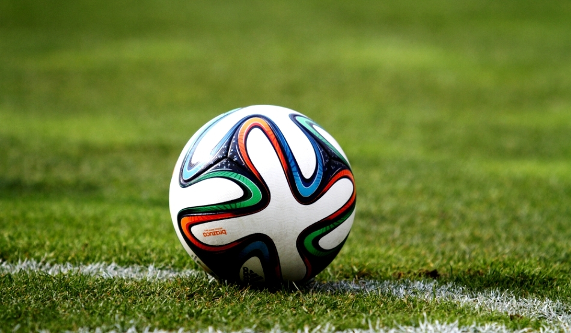
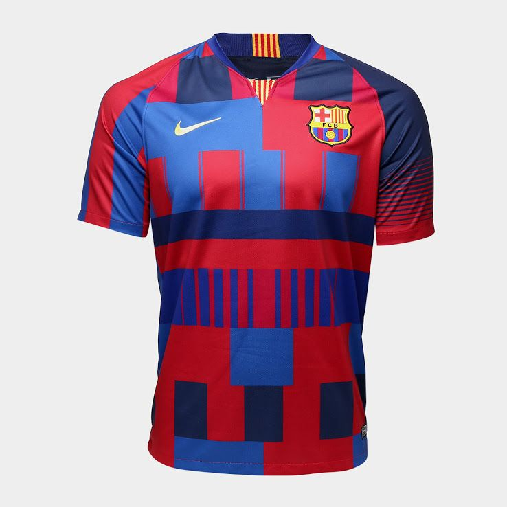
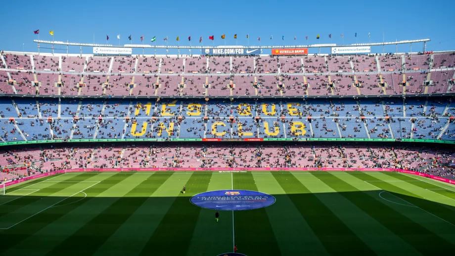
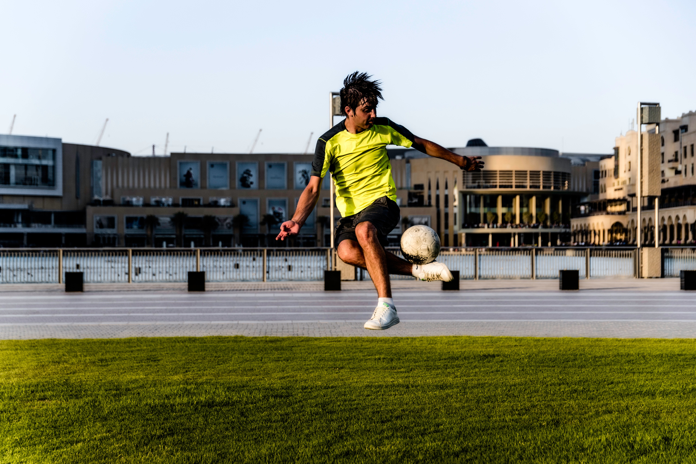
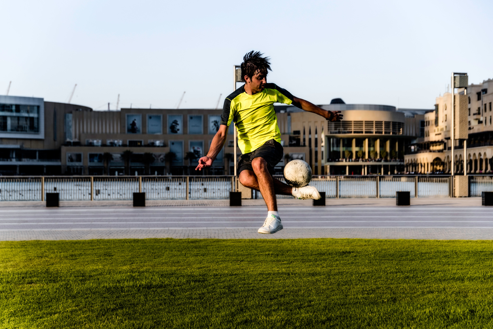
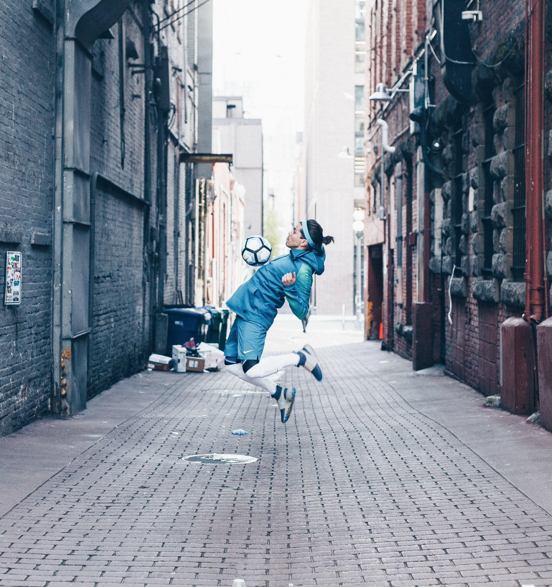
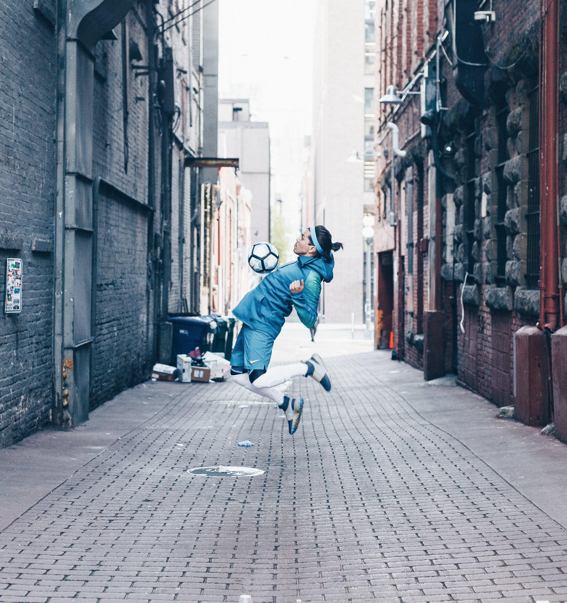

Două echipe de câte 11 jucători încearcă să lovească o minge rotundă (mingea de fotbal), cu scopul de a o introduce în poarta adversă. Echipa care înscrie mai multe goluri până la finalul jocului este declarată câștigătoare. Dacă ambele echipe au marcat același număr de goluri, meciul este considerat egal.
Echipele sunt formate din câte 11 jucători fiecare. Din cei 11 jucători dintr-o echipă, 10 sunt jucători de câmp, împărțiți pe diferite posturi (nu neapărat fixe) și cu diverse sarcini, iar unul este portarul care are sarcini speciale, fiind și singurul care are voie să pună mâna pe minge, dar numai în interiorul careului său.
Mingea cu care se joacă este sferică, are o circumferință de 68 – 70 centimetri (deci un diametru în jur de 22 centimetri) și o greutate acceptată cuprinsă între 410 și 450 de grame. Presiunea la care trebuie umflată mingea este între 0,6 și 1,1 atmosfere (bari). Dacă pe vremuri mingile erau confecționate și din piele, acum predomină materialele sintetice.
Echipamentul unui jucător este alcătuit din tricou, șort, ghete de fotbal, șosete lungi (ciorapi sau jambiere) și apărători de gambă (purtate sub șosete). Unii jucători mai poartă și o mască specială de protecție a capului. Portarul are un echipament de culoare diferita fata de cel al celorlalți jucători din echipa proprie sau adversă, având în plus și mănuși speciale, cu care să poată prinde mingea mai bine. Este interzisă purtarea de accesorii care i-ar putea răni pe ceilalți jucători, cum ar fi bijuterii sau ceasuri.
Terenul este dreptunghiular și are dimensiuni pentru meciuri internaționale de 100 – 110 metri în lungime și 64 – 75 metri în lățime. Pentru alte competiții se acceptă lungimea de 90 - 120 metri, iar lățimea de 45 - 90 metri, cu precizarea că terenul nu are voie să fie pătrat. Suprafața de joc este acoperită de cele mai multe ori cu iarbă (gazon), dar mai există și terenuri acceptate acoperite cu gazon sintetic. Pe laturile scurte ale terenului dreptunghiular, la mijloc, se găsesc două porți dreptunghiulare de 7,3 metri lățime și 2,4 metri înălțime.
Durata jocului este de 90 de minute, împărțite în două reprize a câte 45 de minute fiecare. Între cele două reprize este o pauză de 15 de minute, în care jucătorii se retrag la vestiare pentru odihnă sau mici intervenții ale echipei medicale (masaje, comprese etc.). Atat în pauze, cat și in timpul jocului este permisă hidratarea jucătorilor.
Scopul jocului este înscrierea de goluri, adică introducerea mingii în poarta echipei adverse. Câștigă echipa care a înscris mai multe goluri, dar meciurile se pot termina și la egalitate. În unele meciuri eliminatorii egalitatea nu este admisă și atunci meciul se poate prelungi cu două reprize a câte 15 minute fiecare. Dacă rezultatul de egalitate persistă, se poate trece la executarea loviturilor de departajare.
Meciurile sunt arbitrate de 3 – 5 arbitri, care supravegheaza respectarea regulilor jocului. Există un arbitru central, doi tușieri și doi arbitri de poartă. Și arbitrii poartă echipament specific, în culori diferite de ale jucătorilor.
 

 
